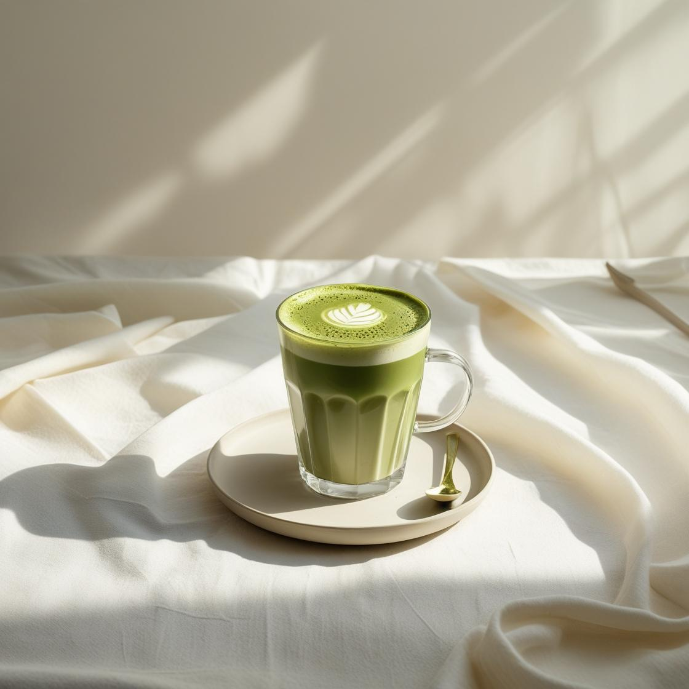

Matcha Latte

minuman yang terbuat dari bubuk matcha yang dicampur dengan susu. Matcha
sendiri adalah bubuk teh hijau yang dihaluskan. Perpaduan ini menciptakan
rasa teh hijau yang creamy dan mzenyegarkan.
Bahan:
- 1 sendok teh bubuk matcha (sekitar 2 gram)
- 30-40 ml air panas (tidak mendidih)
-
200 ml susu cair (bisa full cream, UHT, atau alternatif seperti
almond/coconut milk)
- 1-2 sendok teh gula atau madu (opsional, sesuai selera)
- Es batu (jika ingin es matcha latte)
Cara Membuat:
- Haluskan semua bumbu, lalu tumis hingga harum.
- Lumuri ayam dengan bumbu, diamkan minimal 30 menit.
-
Bakar ayam di atas bara atau teflon hingga matang dan bumbu meresap.
- Sajikan dengan nasi hangat dan sambal.
Tonton Video di YouTube
↠Kembali ke Menu Minuman